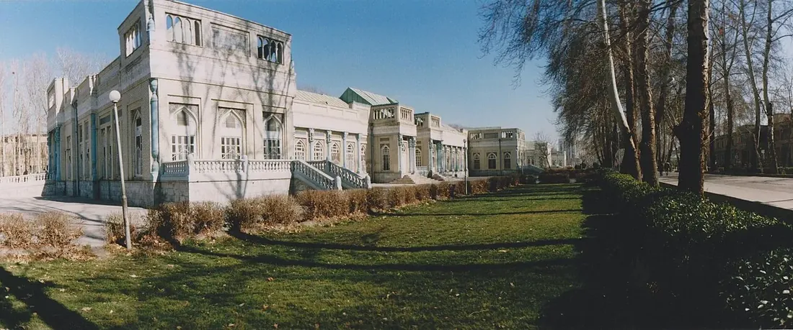

دليل التنسيق الطبي
استشارة طبيب قبل السفر إلى إيران:
حضّر المعلومات وافهم حدود التقييم.
الإجابة المختصرة
للاستشارة الطبية عن بُعد قبل السفر إلى إيران، جهّز تقاريرك وصور الفحوص وقائمة الأدوية والأعراض والأسئلة، مع تواريخ واضحة وترجمة عند الحاجة. قد تساعد المراجعة الأولية في توضيح المعلومات المطلوبة، لكنها لا تحل محل الفحص عند الحاجة ولا تحدد علاجاً نهائياً؛ يقرر الطبيب الاختصاصي المعالج ملاءمة الرعاية، والمحتوى معلوماتي فقط.
قد تساعد الاستشارة الأولية عن بعد في معرفة التقارير المطلوبة والخطوات المحتملة قبل السفر. لكنها لا تستبدل الفحص الحضوري عند الحاجة، ولا تضمن قبول الحالة أو تحديد خطة علاج نهائية أو تكلفة ثابتة.

كيف تتحقق من الجهة الطبية؟
تأكد من الاسم الرسمي للمنشأة والطبيب أو القسم، وطريقة التواصل الرسمية، وما إذا كانت الاستشارة تُقدّم مباشرة من الجهة الصحية أو عبر وسيط. اطلب توضيحاً مكتوباً حول رسوم الاستشارة إن وجدت، والمدة المتوقعة للرد، وما الذي يشمله التواصل.
راجع دليل المستشفيات في مشهد وصفحة السياحة العلاجية، ثم تحقق من المعلومات من الجهة نفسها قبل مشاركة بياناتك.
جهّز ملخصاً طبياً واضحاً
اكتب سبب الاستشارة وتاريخ بداية الأعراض أو التشخيص المعروف والعلاجات السابقة والأدوية الحالية والحساسيات، وأرفق التقارير الحديثة ذات الصلة فقط. اسأل الجهة عن صيغة الملفات واللغة المطلوبة، ولا ترسل صوراً غير واضحة أو ملفات غير مرتبطة بالحالة.
إذا كانت الحالة طارئة أو تتدهور بسرعة، لا تنتظر موعد استشارة عبر الإنترنت؛ اطلب الرعاية الطارئة المناسبة في مكانك.
حماية البيانات الطبية
تحقق من هوية المستلم وقناة إرسال الملفات وسياسة الخصوصية المتاحة. شارك الحد الأدنى اللازم، وتجنب إرسال أرقام الهوية أو معلومات الدفع عبر حسابات غير موثقة أو مجموعات عامة. احتفظ بنسخة من الملفات التي أرسلتها وتاريخ الإرسال.
ما الذي يمكن وما الذي لا يمكن للاستشارة عن بعد أن تحسمه؟
قد تساعد في فرز المعلومات وتحديد فحوص إضافية أو اقتراح مراجعة حضورية، لكن دقتها تعتمد على المعلومات المتاحة ولا يمكنها دائماً استبدال الفحص السريري أو التصوير أو التحاليل. اطلب توضيحاً بشأن ما لا يزال غير محسوم وما يلزم لتأكيد التقييم.
لا تعتبر رسالة أولية تشخيصاً نهائياً أو ضماناً لنجاح العلاج أو القبول في المستشفى.
قبل اتخاذ قرار السفر
اطلب الخطوة التالية كتابةً: موعد حضوري مقترح إن توفر، الفحوص المطلوبة، المستندات، التكاليف التي تحتاج إلى تأكيد، وما إذا كان ينبغي الانتظار قبل شراء تذاكر غير قابلة للاسترداد. راجع قائمة وثائق السفر الطبي ودليل الميزانية.